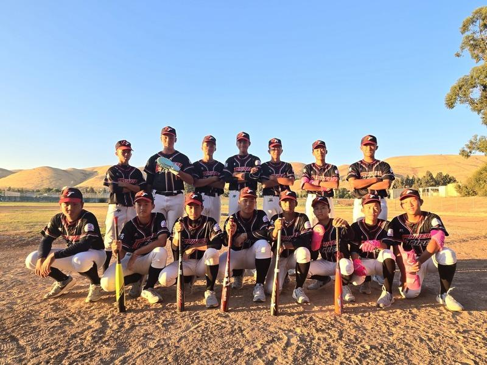
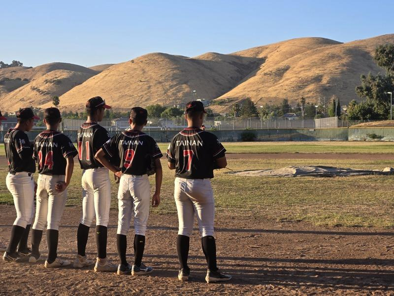

台南市青少棒代表队来美参加小马联盟PONY小马级世界青少棒锦标赛。为求更好表现，球队日前先抵湾区调时差及暖身，在湾区的行程与费用由北美台湾一级棒联盟创办人陈文泽（阿文哥）号召侨胞支持，并安排球队参访辉达总部、美国大黄蜂航空母舰以及屋仑运动家棒球场，甚至到棒球专卖店采买棒球用具。
台南市青少棒代表队睽违22年再度获得小马联盟亚太区代表参赛权。台南市青少棒代表队由台南市民德国中、崇明国中、安顺国中、金城国中球员组成。台南市府与市民鼎力相助球队出国比赛，从超过三百万台币的旅费筹备到家长请假自费随队出国，台南市上下对于这场难得的参赛机会，为球队做足准备。代表队7日飞往宾州参加小马联盟世锦赛。
球队总教练蔡清濬表示，选手都是第一次来到美国参加世锦赛，蛮期待来到美国。蔡清濬曾在12年前来美打世界少棒联盟（LLB）的世锦赛，当时因时差关系，当天抵达，隔天下午就开打，球员不太能进入状况，生理时钟跟技术面是无关，但影响出赛表现。有上次的比赛经验，这次就先抵达旧金山湾区，调时差与美国球队切磋，他感谢湾区的侨胞出钱出力接待球队在湾区的旅程。
球队在6日中午抵达位在东湾的运动用品West Coast Sporting Goods，大量采买棒球与护具。由于美国棒球联盟的比赛需要使用规定的球棒，小马联盟采用USA球棒，属于弹性系数较低的棒球规格。和台湾相比在美售价球棒约只要六到七折价。球队立刻添购新球棒，为球队增加攻击火力，并在北美台湾一级棒联盟安排下，到东湾棒球场让球员熟悉新的球棒，随队的家长们也为各自的孩子添购新护具。
家长会会长林彦华说到，球队能到美国比赛，为台湾争光是乡亲的荣耀，虽然家长工作都很忙碌，但还是努力随队来帮忙。他分享到，参加随队行程有许多令人感动的地方，比如，凌晨三点从台南前往桃园搭机时，不巧遇上游览车故障，司机、教练及家长们努力故障排除并协调紧急换车，让球队顺利即时抵达机场，不少机场地勤与机组人员表示比球队还紧张，热情的跟球员们祝福与击掌。抵美后，同机乘客以及接机的侨胞为球员们加油鼓励，「我们台南的子弟都很认真，一定全力以赴，不负家大家的期待」。

台南市青少棒代表队带着新购买的球棒与护具，在东湾的米慎高中棒球场练球。（记者孙爱薇╱摄影）
台南市青少棒代表队来美参加小马联盟PONY小马级世界青少棒锦标赛。为求更好表现，球队日前先抵湾区调时差及暖身，在湾区的行程与费用由北美台湾一级棒联盟创办人陈文泽（阿文哥）号召侨胞支持，并安排球队参访辉达总部、美国大黄蜂航空母舰以及屋仑运动家棒球场，甚至到棒球专卖店采买棒球用具。
台南市青少棒代表队睽违22年再度获得小马联盟亚太区代表参赛权。台南市青少棒代表队由台南市民德国中、崇明国中、安顺国中、金城国中球员组成。台南市府与市民鼎力相助球队出国比赛，从超过三百万台币的旅费筹备到家长请假自费随队出国，台南市上下对于这场难得的参赛机会，为球队做足准备。代表队7日飞往宾州参加小马联盟世锦赛。
球队总教练蔡清濬表示，选手都是第一次来到美国参加世锦赛，蛮期待来到美国。蔡清濬曾在12年前来美打世界少棒联盟（LLB）的世锦赛，当时因时差关系，当天抵达，隔天下午就开打，球员不太能进入状况，生理时钟跟技术面是无关，但影响出赛表现。有上次的比赛经验，这次就先抵达旧金山湾区，调时差与美国球队切磋，他感谢湾区的侨胞出钱出力接待球队在湾区的旅程。
球队在6日中午抵达位在东湾的运动用品West Coast Sporting Goods，大量采买棒球与护具。由于美国棒球联盟的比赛需要使用规定的球棒，小马联盟采用USA球棒，属于弹性系数较低的棒球规格。和台湾相比在美售价球棒约只要六到七折价。球队立刻添购新球棒，为球队增加攻击火力，并在北美台湾一级棒联盟安排下，到东湾棒球场让球员熟悉新的球棒，随队的家长们也为各自的孩子添购新护具。
家长会会长林彦华说到，球队能到美国比赛，为台湾争光是乡亲的荣耀，虽然家长工作都很忙碌，但还是努力随队来帮忙。他分享到，参加随队行程有许多令人感动的地方，比如，凌晨三点从台南前往桃园搭机时，不巧遇上游览车故障，司机、教练及家长们努力故障排除并协调紧急换车，让球队顺利即时抵达机场，不少机场地勤与机组人员表示比球队还紧张，热情的跟球员们祝福与击掌。抵美后，同机乘客以及接机的侨胞为球员们加油鼓励，「我们台南的子弟都很认真，一定全力以赴，不负家大家的期待」。

球员穿着印有台南（TAINAN）的球衣在东湾球场练球，提前适应气候环境，不少球员表示，美国入夜很冷。（记者孙爱薇╱摄影）